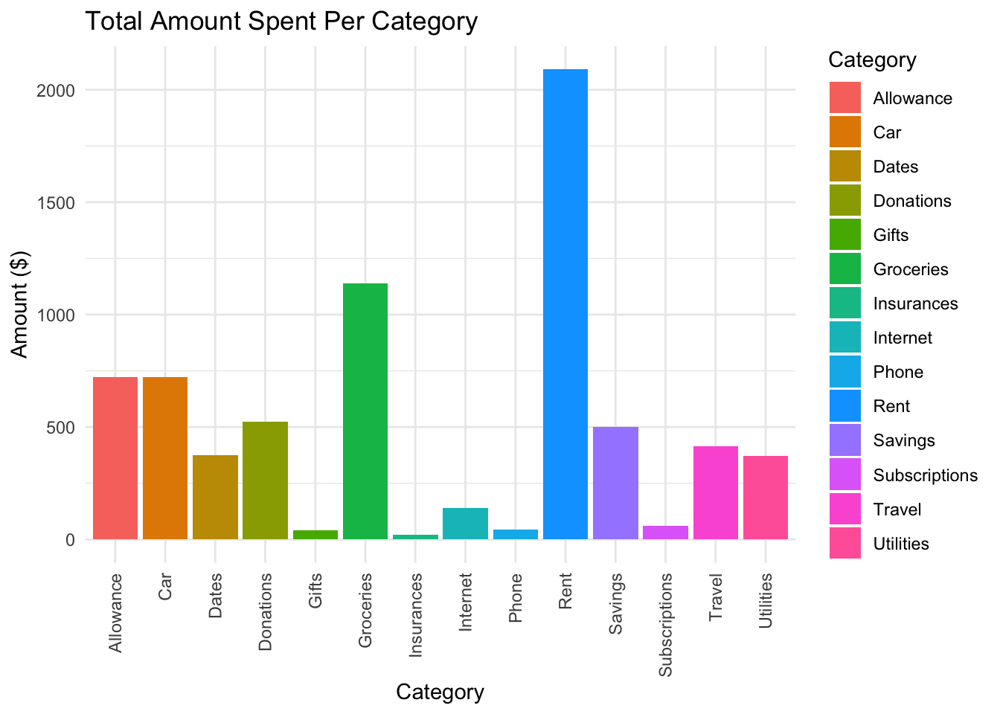
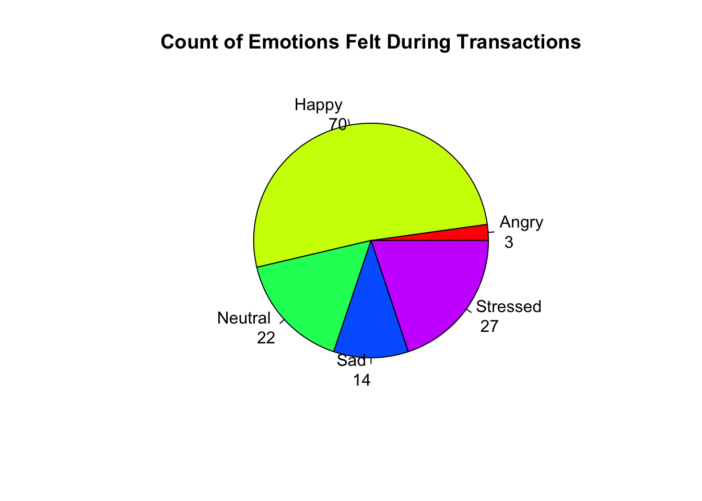
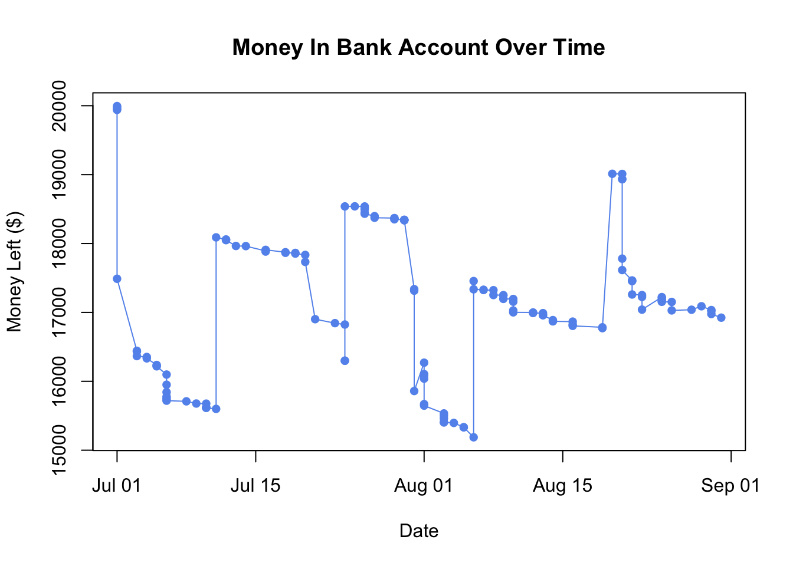

library(ggplot2) # used for plots
library(leaflet) # used to make interactive maps
library(dplyr) # used for grouping the dataCode
Import Libraries
Read in Dataset
df <- read.csv('spending.csv', header = T)
head(df) Date Category Description Amount Method Necessity Store.Name
1 7/1/2024 Allowance craigs list ad $5.00 Credit Card Want Criags list
2 7/1/2024 Groceries food $19.69 Credit Card Need Walmart
3 7/1/2024 Car clip $35.79 Credit Card Need Autozone
4 7/1/2024 Income refund $14.00 Credit Card Need Walmart
5 7/1/2024 Other payoff $2,465.21 Debit Card Need Apple
6 7/3/2024 Rent rent $1,045.25 Debit Card Need Apt
Latitude Longitude Emotion Money.Left Income.Expense
1 NA NA Happy $19,995.00 Expense
2 32.23359 -110.8394 Neutral $19,975.31 Expense
3 32.23731 -110.8729 Stressed $19,939.52 Expense
4 32.19314 -110.8424 Happy $19,953.52 Income
5 NA NA Happy $17,488.31 Expense
6 NA NA Neutral $16,443.06 ExpenseChange Variable Types
df$Date <- trimws(df$Date)
df$Date <- as.Date(df$Date, format = "%m/%d/%Y")
df$Category <- as.factor(df$Category)
df$Amount <- gsub("[^0-9.]", "", df$Amount)
df$Amount <- as.numeric(df$Amount)
df$Method <- as.factor(df$Method)
df$Necessity <- as.factor(df$Necessity)
df$Emotion <- as.factor(df$Emotion)
df$Money.Left <- gsub("[^0-9.]", "", df$Money.Left)
df$Money.Left <- as.numeric(df$Money.Left)
df$Income.Expense <- as.factor(df$Income.Expense)Visualize Your Spending Data
Amount Spent Per Category
spentdf <- subset(df, !(Category %in% c("Income", "Other")))
ggplot(spentdf, aes(x = Category, y = Amount, fill = Category))+
geom_bar(stat = "identity") +
labs(title = "Total Amount Spent Per Category", x = "Category", y = "Amount ($)") +
theme_minimal() +
theme(axis.text.x = element_text(angle = 90, vjust = 0.5, hjust = 1))
Pie Chart of Emotion Felt During Transactions
counts <- table(df$Emotion)
pie(counts,
main = "Count of Emotions Felt During Transactions",
col = rainbow(length(counts)),
labels = paste(names(counts), "\n", counts))
Line Chart of Money In Account Over Time
plot(df$Date, df$Money.Left, type = "o", col = "cornflowerblue",
xlab = "Date", ylab = "Money Left ($)",
main = "Money In Bank Account Over Time", pch = 16)
Map of Location of Transactions
# Make a new dataframe with missing values for location removed
mapdf <- na.omit(df)
map_summary <- mapdf %>%
group_by(Latitude, Longitude, `Store.Name`) %>% # each unique combination of these three variables are treated as a separate group
summarise(Count = n(), .groups = 'drop') # counts the number of transactions for each group n() and creates a new data frame called map_summary
leaflet(data = map_summary) %>% # creates map using map_summary data
addTiles() %>% # adds default map tiles from OpenStreetMap to leaflet map
addMarkers( # adds marker for each location by latitude and longitude
~Longitude, ~Latitude,
popup = ~paste("Location:", `Store.Name`, "<br>", # specify what will be displayed in the popup
"Count of Transactions:", Count)
) %>%
setView(lng = mean(map_summary$Longitude, na.rm = TRUE), # sets the view to the average latitude and longitude values from the data
lat = mean(map_summary$Latitude, na.rm = TRUE),
zoom = 12)Find Monthly Average for Each Category
sum_total <- aggregate(Amount ~ Category, data = df, FUN = base::sum)
sum_total$AverageSpent <- sum_total$Amount / 2
sum_total Category Amount AverageSpent
1 Allowance 721.80 360.900
2 Car 722.35 361.175
3 Dates 375.05 187.525
4 Donations 524.35 262.175
5 Gifts 40.80 20.400
6 Groceries 1139.24 569.620
7 Income 9277.45 4638.725
8 Insurances 19.92 9.960
9 Internet 140.00 70.000
10 Other 4690.38 2345.190
11 Phone 44.00 22.000
12 Rent 2090.50 1045.250
13 Savings 500.00 250.000
14 Subscriptions 62.06 31.030
15 Travel 413.10 206.550
16 Utilities 370.00 185.000